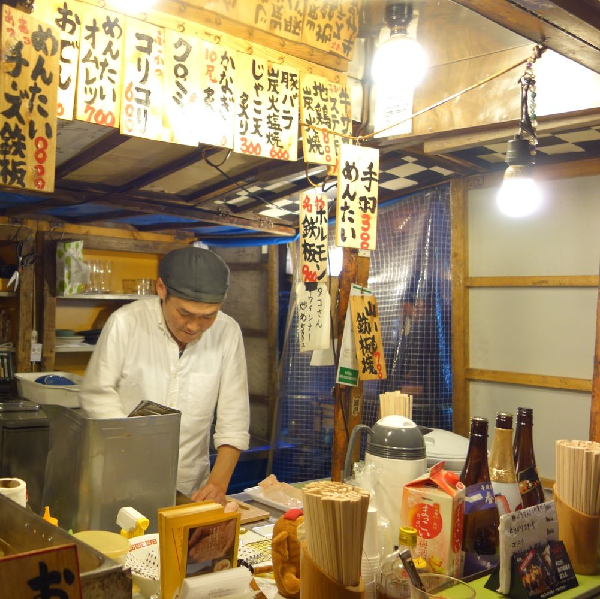

半熟牛肉＆蛋與滿滿蔥花
地點：應該是博多車站...
牛肉超嫩、蔥超多超香，還有配薑，飯更是無懈可擊。雖然在中午上班族放飯時間，我們還是厚著臉皮走入超級小又擠的店，指著牆上的照片，硬是吃了。完全不後悔。

墨魚咖哩飯
地點：應該是福岡鐵塔裡面...
送上來時覺得不怎麼樣，這麼簡單的外觀應該吃起來也不怎麼樣。不過一吃驚為天人，咖哩超濃超香，又配上好軟Q的飯，連旁邊醃蘿蔔都好好吃。

街道夜市關東煮
地點：是在一個夜市裡，整區都是攤販，主要是賣吃的...
有很多中年的日本大叔，有點可怕，我斗膽的跟同事一股腦兒坐下，隨便指了什麼就吃了起來～又擠水蒸氣超濃，冬天吃這個超溫暖。努力切菜的老板超帥氣！
只融你口不融你手草莓醬
地點：飯店裡的早餐...
這個發明實在是太神奇了，裡面有草莓醬及奶油，往中間一折，就可同時間擠出這兩條果醬，攜帶容易不沾手，沾烤好的吐司超好吃！從來沒見過這樣神奇的發明，真的是土包子